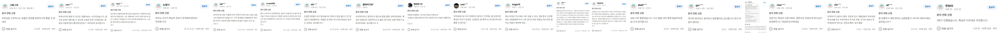

조옥형 원장
학력 및 주요 경력
- 연세대학교 재활학과 학사 졸업
- 경북대학교 아동가족학과(상담 전공) 석사 졸업
- 경북대학교 아동가족학과(상담 전공) 박사 졸업
- 전) 경북대학교, 인제대학교, 경북과학대학 외래교수
- 전) 보건복지부 정신건강전문요원 슈퍼바이저
- 전) 여성가족부 성폭력전문상담사 양성과정 교수
따뜻하지만 정확한 회복 상담
26년 동안 11,500명의 부부를 상담하며 9,000명 이상을 치료해 온 경험을 바탕으로 부부가 원하는 관계의 방향을 다시 찾을 수 있도록 돕겠습니다.
원장 소개
오랜 임상 경험과 상담 연구를 바탕으로, 부부가 원하는 관계 회복의 방향을 함께 찾습니다.
학력 및 주요 경력
센터 소개
높은 만족도로 소개를 통해 직접 찾아주시는 분들이 300팀이 넘습니다. 부부마다 다른 갈등의 모양을 세밀하게 살피고, 그 관계가 원하는 방향으로 움직일 수 있도록 집중도 높은 상담을 진행합니다.
조옥형 박사의 진료 철학


연세부부상담클리닉이 드리는 약속
왜 같은 문제로 반복해서 상처를 주고 받는지 구조를 살피고 회복의 언어를 다시 찾는 과정에 집중합니다.
부부 심리 상담의 시작점
"나는 상대방의 어떤 말에 감정이 상하는가?" "왜 화가 나는가?" "배우자에게 화가 났을 때 어떤 반응을 하는가?" 이런 질문들이 관계 회복의 출발점이 됩니다. 자신의 감정 포인트를 알아야 배우자와도 정확한 대화를 시작할 수 있습니다.
작은 차이가 부부 사이의 행복과 불행을 만들게 됩니다. 자신을 돌아보고, 배우자와 이성적으로 대화하는 것이 가장 중요합니다.
2003년 개원 이후 다양한 사례를 꾸준히 다루며 각 갈등의 결을 깊이 있게 살펴왔습니다.
부부의 관계 상태와 상담 목표에 따라 적절한 기법을 선택해 집중적으로 개입합니다.
평일이 어려운 분들도 상담을 이어갈 수 있도록 월요일부터 일요일까지 공휴일 포함 오전 8시부터 밤 11시까지 예약 가능합니다.
처음부터 끝까지 조옥형 박사가 직접 상담하며 관계의 흐름을 놓치지 않고 함께 살펴봅니다.
관계 구조와 감정의 흐름, 부부 갈등의 패턴을 실제 대화 방식을 통해 함께 다룹니다.
반복되는 다툼의 패턴과 감정의 시작점, 상처가 쌓이는 구조를 먼저 살펴봅니다.
짜증, 서운함, 외로움, 분노가 대화를 어떻게 무너뜨리는지 함께 다룹니다.
부부가 실제로 원하는 관계의 모습을 함께 목표하고, 그에 맞춰 행동과 대화 방식을 바꿔갑니다.
상담 안내
반복 갈등, 외도, 섹스리스, 의심, 고부갈등, 침묵과 별거, 우울과 불안까지 부부 문제와 개인 심리 문제를 함께 다룹니다.
반복되는 다툼 · 외도 · 의심 섹스리스 · 침묵 · 별거
짜증 · 지침감 · 외로움 · 모욕감 버려진 느낌 · 무가치감 · 공허함
우울 · 두려움 · 의존 · 강박 공황 · 불면 · 대인관계
필요에 따라 치료적 개입을 적용하여 관계 안에서 실제 변화가 일어날 수 있도록 연세부부상담클리닉 조옥형 박사가 돕습니다.
상담 진행 순서
상담 내용과 효과에 따라 회차별 시간을 조정하며, 원칙적으로는 부부가 함께 상담 받고 필요 시 일부 시간을 개별 상담으로 나누어 진행합니다.
01
전화, 네이버예약, 카카오톡으로 문의해주시면 편한 일정에 맞춰 상담을 안내해드립니다.
02
초기 상담은 보통 1주 간격으로 2회 진행하며, 현재 관계의 갈등 구조를 구체적으로 파악합니다.
03
상담은 1시간 30분씩 3회를 기본으로 하되, 필요에 따라 2시간 또는 1시간 30분 구성으로 조정하여 진행합니다.
04
2차 상담 이후 나타나는 변화를 점검하고, 이후 최종 관계의 방향을 함께 정해갑니다.
오시는 길
지도를 마우스로 움직이며 위치를 확인하고, 아래 안내를 따라 편하게 찾아오실 수 있습니다.